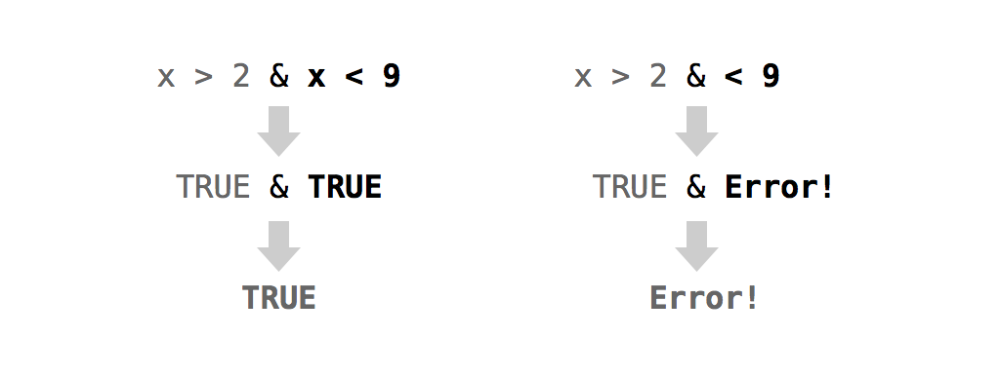

6 値の変更
バーチャルなデッキでゲームをプレイする準備はできましたか？…ちょっと待ってください！現在のデッキのポイントシステムは、多くのカードゲームと一致していません。例えば、ウォー（War）やポーカーでは、通常エースはキングよりも高く評価されます。その場合、ポイントは1ではなく14にする必要があります。
このタスクでは、ウォー、ハーツ（Hearts）、ブラックジャック（Blackjack）という3つの異なるゲームに合わせて、デッキのポイントシステムを3回変更します。それぞれのゲームを通じて、データセット内の値を変更する方法について異なる側面を学びます。まず、操作用の deck のコピーを作成しましょう。これにより、万が一失敗しても、元の deck というクリーンなコピーに戻れるようになります。
deck2 <- deck6.1 値をその場で変更する
Rの記法システムを使用して、Rオブジェクト内の値を変更できます。まず、変更したい値（または値のセット）を指定します。次に、代入演算子 <- を使用してそれらの値を上書きします。Rは元のオブジェクト内の選択された値を更新します。実際の例でこれを確認してみましょう。
vec <- c(0, 0, 0, 0, 0, 0)
vec
## 0 0 0 0 0 0vec の最初の値を選択する方法は以下の通りです。
vec[1]
## 0そして、それを変更する方法は以下の通りです。
vec[1] <- 1000
vec
## 1000 0 0 0 0 0新しい値の数が選択された値の数と一致する限り、複数の値を一度に置き換えることができます。
vec[c(1, 3, 5)] <- c(1, 1, 1)
vec
## 1 0 1 0 1 0
vec[4:6] <- vec[4:6] + 1
vec
## 1 0 1 1 2 1また、オブジェクト内にまだ存在しない値を作成することもできます。Rは新しい値を収容するためにオブジェクトを拡張します。
vec[7] <- 0
vec
## 1 0 1 1 2 1 0これは、データセットに新しい変数を追加するための優れた方法を提供します。
deck2$new <- 1:52
head(deck2)
## face suit value new
## king spades 13 1
## queen spades 12 2
## jack spades 11 3
## ten spades 10 4
## nine spades 9 5
## eight spades 8 6また、データフレームから列を（またはリストから要素を）削除するには、NULL というシンボルを代入します。
deck2$new <- NULL
head(deck2)
## face suit value
## king spades 13
## queen spades 12
## jack spades 11
## ten spades 10
## nine spades 9
## eight spades 8ウォー（War）というゲームでは、エースが最強です。エースには、すべてのカードの中で最高の値（例えば14など）を与えます。他のカードは、deck 内ですでに持っている値のままにします。ウォーをプレイするには、エースの値を1から14に変更するだけで済みます。
デッキをシャッフルしていない限り、エースがどこにあるかは正確にわかっています。エースは13カードごとに現れます。したがって、Rの記法システムで次のように指定できます。
deck2[c(13, 26, 39, 52), ]
## face suit value
## ace spades 1
## ace clubs 1
## ace diamonds 1
## ace hearts 1deck2 の列の次元をサブセットすることで、エースの**値（value）**だけを特定できます。あるいは、列ベクトル deck2$value をサブセットする方がさらに良いでしょう。
deck2[c(13, 26, 39, 52), 3]
## 1 1 1 1
deck2$value[c(13, 26, 39, 52)]
## 1 1 1 1あとは、これらの古い値に新しい値のセットを代入するだけです。新しい値のセットは、置き換える値のセットと同じサイズである必要があります。したがって、c(14, 14, 14, 14) をエースの値に保存することもできますし、単に 14 を保存して、Rの再利用ルール（Recycling Rules）に頼って 14 を c(14, 14, 14, 14) に拡張させることもできます。
deck2$value[c(13, 26, 39, 52)] <- c(14, 14, 14, 14)
# または
deck2$value[c(13, 26, 39, 52)] <- 14値は**その場で（in place）**変更されることに注目してください。変更された deck2 の「コピー」ができるわけではなく、deck2 の内部に新しい値が現れます。
head(deck2, 13)
## face suit value
## king spades 13
## queen spades 12
## jack spades 11
## ten spades 10
## nine spades 9
## eight spades 8
## seven spades 7
## six spades 6
## five spades 5
## four spades 4
## three spades 3
## two spades 2
## ace spades 14同じテクニックは、データをベクトル、行列、配列、リスト、データフレームのどれに保存していても機能します。Rの記法システムで変更したい値を指定し、Rの代入演算子を使用してそれらの値の上に上書きするだけです。
この例では、各エースがどこにあるかを正確に知っていたため、非常に簡単に進みました。カードは整然とソートされており、エースは13行ごとに現れていました。
しかし、デッキがシャッフルされていたらどうなるでしょうか？すべてのカードを目で見てエースの場所をメモすることもできますが、それは非常に退屈です。データフレームがより大きければ、それは不可能かもしれません。
deck3 <- shuffle(deck)今、エースはどこにあるでしょうか？
head(deck3)
## face suit value
## queen clubs 12
## king clubs 13
## ace spades 1 # エース
## nine clubs 9
## seven spades 7
## queen diamonds 12Rにエースを探してもらいましょう。これは**論理値によるサブセット作成（Logical Subsetting）**で行うことができます。論理値によるサブセット作成は、Rオブジェクトに対してターゲットを絞った抽出と変更を行う方法を提供し、独自のデータセット内での一種の「検索と破壊」任務のようなものです。
6.2 論理値によるサブセット作成（Logical Subsetting）
Rの論理インデックスシステム（Figure 5.2）を覚えていますか？要約すると、TRUE と FALSE のベクトルで値を選択できます。このベクトルは、サブセットしたい次元と同じ長さである必要があります。Rは TRUE に一致するすべての要素を返します。
vec
## 1 0 1 1 2 1 0
vec[c(FALSE, FALSE, FALSE, FALSE, TRUE, FALSE, FALSE)]
## 2一見すると、このシステムは非実用的に見えるかもしれません。長い TRUE と FALSE のベクトルをわざわざ入力したい人などいるでしょうか？誰もいません。しかし、その必要はありません。**論理テスト（Logical Test）**に TRUE と FALSE のベクトルを作成させることができます。
6.2.1 論理テスト
論理テストとは、「1は2より小さいか？（1 < 2）」や「3は4より大きいか？（3 > 4）」といった比較のことです。Rは、比較を行うために使用できる7つの論理演算子を提供しています（Table 6.1）。
| 演算子 | 構文 | テスト内容 |
|---|---|---|
> |
a > b |
a は b より大きいか？ |
>= |
a >= b |
a は b 以上か？ |
< |
a < b |
a は b より小さいか？ |
<= |
a <= b |
a は b 以下か？ |
== |
a == b |
a は b と等しいか？ |
!= |
a != b |
a は b と等しくないか？ |
%in% |
a %in% c(a, b, c) |
a は グループ c(a, b, c) に含まれるか？ |
各演算子は TRUE または FALSE を返します。演算子を使用してベクトルを比較すると、Rは算術演算子と同じように要素ごとの比較を行います。
1 > 2
## FALSE
1 > c(0, 1, 2)
## TRUE FALSE FALSE
c(1, 2, 3) == c(3, 2, 1)
## FALSE TRUE FALSE%in% は、通常の要素ごとの実行を行わない唯一の演算子です。%in% は、左側の値が右側のベクトルに含まれているかどうかをテストします。左側にベクトルを指定した場合、%in% は左側の値と右側の値をペアにするのではなく、左側の各値が右側のベクトルのどこかに含まれているかどうかを個別にテストします。
1 %in% c(3, 4, 5)
## FALSE
c(1, 2) %in% c(3, 4, 5)
## FALSE FALSE
c(1, 2, 3) %in% c(3, 4, 5)
## FALSE FALSE TRUE
c(1, 2, 3, 4) %in% c(3, 4, 5)
## FALSE FALSE TRUE TRUE等価性をテストするには、単一の等号 = ではなく、二重の等号 == を使用することに注意してください（= は <- の別の書き方です）。a が b に等しいかどうかをテストする際に、うっかり a = b と入力してしまいがちです。残念ながら、その場合は嫌な驚きを味わうことになります。Rは TRUE も FALSE も返しません。なぜなら、あなたが a <- b と同等の操作を実行したために、a は b と等しくなってしまうからです。
Warning
= は代入演算子です
= と == を混同しないように注意してください。= は <- と同じことを行い、オブジェクトに値を代入します。
論理演算子を使用して任意の2つのRオブジェクトを比較できますが、論理演算子が最も意味をなすのは、同じデータタイプの2つのオブジェクトを比較する場合です。異なるデータタイプのオブジェクトを比較する場合、Rは比較を行う前に型変換（Coercion）ルールを使用してオブジェクトを同じタイプに変換します。
練習問題：エースは何枚？
deck2のface列を抽出し、各値がaceと等しいかどうかをテストしてください。チャレンジとして、Rを使用してエースが何枚あるかを素早く数えてください。
解答例 Rの
$記法を使用してface列を抽出できます。
deck2$face
## "king" "queen" "jack" "ten" "nine"
## "eight" "seven" "six" "five" "four"
## "three" "two" "ace" "king" "queen"
## "jack" "ten" "nine" "eight" "seven"
## "six" "five" "four" "three" "two"
## "ace" "king" "queen" "jack" "ten"
## "nine" "eight" "seven" "six" "five"
## "four" "three" "two" "ace" "king"
## "queen" "jack" "ten" "nine" "eight"
## "seven" "six" "five" "four" "three"
## "two" "ace"次に、== 演算子を使用して、各値が ace と等しいかどうかをテストします。以下のコードでは、Rは再利用ルールを使用して、deck2$face のすべての値を "ace" と個別に比較します。引用符が重要であることに注意してください。引用符を省略すると、Rは deck2$face と比較するための ace という名前のオブジェクトを探そうとします。
deck2$face == "ace"
## FALSE FALSE FALSE FALSE FALSE FALSE FALSE
## FALSE FALSE FALSE FALSE FALSE TRUE FALSE
## FALSE FALSE FALSE FALSE FALSE FALSE FALSE
## FALSE FALSE FALSE FALSE TRUE FALSE FALSE
## FALSE FALSE FALSE FALSE FALSE FALSE FALSE
## FALSE FALSE FALSE TRUE FALSE FALSE FALSE
## FALSE FALSE FALSE FALSE FALSE FALSE FALSE
## FALSE FALSE TRUEsum を使用して、上記のベクトル内の TRUE の数を素早く数えることができます。Rが論理値で計算を行う際、論理値を数値に変換することを思い出してください。Rは TRUE を1に、FALSE を0に変換します。その結果、sum は TRUE の数をカウントすることになります。
sum(deck2$face == "ace")
## 4このメソッドを使用して、カードをシャッフルしていたとしても、デッキ内のエースを特定し、変更することができます。まず、シャッフルされたデッキ内のエースを特定する論理テストを作成します。
deck3$face == "ace"次に、そのテストをインデックスとして使用して、エースのポイント値を絞り込みます。テストは論理値ベクトルを返すため、そのままインデックスとして使用できます。
deck3$value[deck3$face == "ace"]
## 1 1 1 1最後に、代入を使用して deck3 のエースの値を変更します。
deck3$value[deck3$face == "ace"] <- 14
head(deck3)
## face suit value
## queen clubs 12
## king clubs 13
## ace spades 14 # エース
## nine clubs 9
## seven spades 7
## queen diamonds 12要約すると、論理テストを使用してオブジェクト内の値を選択できます。
論理値によるサブセット作成（Logical Subsetting）は、データセット内の個々の値を素早く特定、抽出、変更できるため、強力なテクニックです。論理値によるサブセット作成を使用する場合、データセットの「どこに」値が存在するかを知る必要はありません。論理テストでその値をどのように表現するかを知るだけで済みます。
論理値によるサブセット作成は、Rが最も得意とすることの一つです。実際、論理値によるサブセット作成は、高速で効率的なRコードを書くためのコーディングスタイルである**ベクトル化プログラミング（Vectorized Programming）**の主要な構成要素であり、これについては「速度（Speed）」で学習します。
論理値によるサブセット作成を新しいゲーム「ハーツ（Hearts）」に活用してみましょう。ハーツでは、すべてのカードの価値はゼロです。
deck4 <- deck
deck4$value <- 0
head(deck4, 13)
## face suit value
## king spades 0
## queen spades 0
## jack spades 0
## ten spades 0
## nine spades 0
## eight spades 0
## seven spades 0
## six spades 0
## five spades 0
## four spades 0
## three spades 0
## two spades 0
## ace spades 0ただし、ハーツのスート（Suit）のカードと、スペードのクイーンは除きます。ハーツのスートの各カードは1ポイントの価値があります。これらのカードを見つけて、その値を置き換えることができますか？挑戦してみてください。
練習問題：ハーツ用にスコアを付ける
deck4の中で、スートがheartsであるすべてのカードに1という値を割り当ててください。
解答例 これを行うには、まず
heartsスートのカードを特定するテストを書きます。
deck4$suit == "hearts"
## FALSE FALSE FALSE FALSE FALSE FALSE FALSE
## FALSE FALSE FALSE FALSE FALSE FALSE FALSE
## FALSE FALSE FALSE FALSE FALSE FALSE FALSE
## FALSE FALSE FALSE FALSE FALSE FALSE FALSE
## FALSE FALSE FALSE FALSE FALSE FALSE FALSE
## FALSE FALSE FALSE FALSE TRUE TRUE TRUE
## TRUE TRUE TRUE TRUE TRUE TRUE TRUE
## TRUE TRUE TRUE次に、そのテストを使用してこれらのカードの値を選択します。
deck4$value[deck4$suit == "hearts"]
## 0 0 0 0 0 0 0 0 0 0 0 0 0最後に、これらの値に新しい数値を代入します。
deck4$value[deck4$suit == "hearts"] <- 1これで、すべての hearts カードが更新されました。
deck4$value[deck4$suit == "hearts"]
## 1 1 1 1 1 1 1 1 1 1 1 1 1ハーツにおいて、スペードのクイーンは最も特殊な値を持ち、13ポイントの価値があります。彼女の値を変えるのは簡単なはずですが、見つけるのが意外と難しいです。すべての**クイーン（Queen）**を探すこともできます。
deck4[deck4$face == "queen", ]
## face suit value
## queen spades 0
## queen clubs 0
## queen diamonds 0
## queen hearts 1しかし、これでは3枚多すぎます。一方で、**スペード（Spades）**のすべてのカードを探すこともできます。
deck4[deck4$suit == "spades", ]
## face suit value
## king spades 0
## queen spades 0
## jack spades 0
## ten spades 0
## nine spades 0
## eight spades 0
## seven spades 0
## six spades 0
## five spades 0
## four spades 0
## three spades 0
## two spades 0
## ace spades 0これでは12枚多すぎます。本当に見つけたいのは、顔（face）がクイーンに等しく、かつスート（suit）がスペードに等しいすべてのカードです。これは**ブール演算子（Boolean Operator）**で行うことができます。ブール演算子は、複数の論理テストを組み合わせて単一のテストにします。
6.2.2 ブール演算子（Boolean Operators）
ブール演算子とは、「かつ（&）」や「または（|）」などのことです。これらは複数の論理テストの結果を単一の TRUE または FALSE に集約します。Rには6つのブール演算子があります（Table 6.2）。
| 演算子 | 構文 | テスト内容 |
|---|---|---|
& |
cond1 & cond2 |
cond1 と cond2 の両方が真か？ |
| |
cond1 | cond2 |
cond1 と cond2 のうち少なくとも一方が真か？ |
xor |
xor(cond1, cond2) |
cond1 と cond2 のうち、正確に一方だけが真か？ |
! |
!cond1 |
cond1 は偽か？（例：論理テストの結果を反転させる） |
any |
any(cond1, cond2, ...) |
条件のいずれかが真か？ |
all |
all(cond1, cond2, ...) |
条件のすべてが真か？ |
ブール演算子を使用するには、2つの完全な論理テストの間に配置します。Rは各論理テストを実行し、ブール演算子を使用して結果を単一の TRUE または FALSE に組み合わせます（Figure 6.1）。
Warningブール演算子での最も一般的な間違い
ブール演算子の両側に完全なテストを置くことを忘れがちです。日本語や英語では「xは2より大きく9より小さいか？」と言うのが効率的ですが、Rでは「xは2より大きいか、かつxは9より小さいか？」に相当する書き方をする必要があります。
ベクトルで使用される場合、ブール演算子は算術演算子や論理演算子と同じ要素ごとの実行に従います。
a <- c(1, 2, 3)
b <- c(1, 2, 3)
c <- c(1, 2, 4)
a == b
## TRUE TRUE TRUE
b == c
## TRUE TRUE FALSE
a == b & b == c
## TRUE TRUE FALSEブール演算子を使用して、デッキ内のスペードのクイーンを特定できるでしょうか？もちろんです。各カードをテストして、クイーンであり、かつスペードであるかどうかを確認したいわけです。Rでは次のように書けます。
deck4$face == "queen" & deck4$suit == "spades"
## FALSE TRUE FALSE FALSE FALSE FALSE FALSE
## FALSE FALSE FALSE FALSE FALSE FALSE FALSE
## FALSE FALSE FALSE FALSE FALSE FALSE FALSE
## FALSE FALSE FALSE FALSE FALSE FALSE FALSE
## FALSE FALSE FALSE FALSE FALSE FALSE FALSE
## FALSE FALSE FALSE FALSE FALSE FALSE FALSE
## FALSE FALSE FALSE FALSE FALSE FALSE FALSE
## FALSE FALSE FALSEこのテストの結果を独自のオブジェクトに保存します。そうすることで、結果が扱いやすくなります。
queenOfSpades <- deck4$face == "queen" & deck4$suit == "spades"次に、テストをインデックスとして使用して、スペードのクイーンの値を選択します。テストが正しく値を選択していることを確認してください。
deck4[queenOfSpades, ]
## face suit value
## queen spades 0
deck4$value[queenOfSpades]
## 0スペードのクイーンが見つかったので、その値を更新できます。
deck4$value[queenOfSpades] <- 13
deck4[queenOfSpades, ]
## face suit value
## queen spades 13これでデッキはハーツをプレイする準備が整いました。
練習問題：テストの練習
論理テストのコツを掴んだと思ったら、以下の文章をRコードで書かれたテストに変換してみてください。助けが必要な場合のために、文章の後に回答のテストに使用できるRオブジェクトを定義しておきました。
- w は正の数か？
- x は10より大きく、かつ20より小さいか？
- オブジェクト y は “February” という単語か？
- z 内のすべての値は曜日（day of the week）か？
w <- c(-1, 0, 1)
x <- c(5, 15)
y <- "February"
z <- c("Monday", "Tuesday", "Friday")解答例 以下に回答例を示します。行き詰まった場合は、Rがブール値を使用した論理テストをどのように評価するかを読み直してください。
w > 0
10 < x & x < 20
y == "February"
all(z %in% c("Monday", "Tuesday", "Wednesday", "Thursday", "Friday",
"Saturday", "Sunday"))最後に、ブラックジャックというゲームを考えてみましょう。ブラックジャックでは、各数字カードは自身の面（face）の値と同じ値を持ちます。各絵札（キング、クイーン、ジャック）は10ポイントの価値があります。最後に、各エースはゲームの最終結果に応じて11ポイントまたは1ポイントの価値を持ちます。
まずは deck の新しいコピーから始めましょう。そうすれば、数字カード（two から ten）は正しい値からスタートします。
deck5 <- deck
head(deck5, 13)
## king spades 13
## queen spades 12
## jack spades 11
## ten spades 10
## nine spades 9
## eight spades 8
## seven spades 7
## six spades 6
## five spades 5
## four spades 4
## three spades 3
## two spades 2
## ace spades 1%in% を使用して、絵札の値を一挙に変更できます。
facecard <- deck5$face %in% c("king", "queen", "jack")
deck5[facecard, ]
## face suit value
## king spades 13
## queen spades 12
## jack spades 11
## king clubs 13
## queen clubs 12
## jack clubs 11
## king diamonds 13
## queen diamonds 12
## jack diamonds 11
## king hearts 13
## queen hearts 12
## jack hearts 11
deck5$value[facecard] <- 10
head(deck5, 13)
## face suit value
## king spades 10
## queen spades 10
## jack spades 10
## ten spades 10
## nine spades 9
## eight spades 8
## seven spades 7
## six spades 6
## five spades 5
## four spades 4
## three spades 3
## two spades 2
## ace spades 1あとはエースの値を修正するだけです…本当にそうでしょうか？エースにどの値を与えるかを決めるのは困難です。なぜなら、その正確な値は手札ごとに変わるからです。各手札の終わりに、プレイヤーのカードの合計が21を超えなければ、エースは11に等しくなります。そうでなければ、エースは1に等しくなります。エースの実際の値は、プレイヤーの手札にある他のカードに依存します。これは**欠損情報（Missing Information）**のケースです。現時点では、エースカードに正しいポイント値を割り当てるのに十分な情報がありません。
6.3 欠損情報（Missing Information）
欠損情報の問題は、データサイエンスで頻繁に発生します。通常、これらはより単純なものです。測定値が失われた、破損した、あるいは最初から取られなかったために値がわからないというケースです。Rには、これらの欠損値を管理するのに役立つ方法があります。
NA という文字は、Rにおける特別なシンボルです。これは「利用不可（Not Available）」の略で、欠損情報のプレースホルダーとして使用できます。Rは、欠損情報を扱ってほしいとあなたが思う通りに、NA を正確に扱います。例えば、欠損情報に1を足すと、どのような結果を期待しますか？
1 + NA
## NARは、2つ目の欠損情報を返します。1 + NA = 1 と言うのは正しくありません。なぜなら、欠損している量がゼロではない可能性が十分にあるからです。あなたには結果を判断するのに十分な情報がありません。
ある欠損情報が1に等しいかどうかをテストした場合はどうなるでしょうか？
NA == 1
## NAここでも、あなたの答えは「これが1に等しいかどうかはわからない」、すなわち NA になるはずです。一般的に、NA をRの演算や関数で使用すると、NA は伝播（Propagate）します。これにより、欠損データに基づいたエラーを犯すことから守られます。
6.3.1 na.rm
欠損値はデータセット内の穴を埋めるのに役立ちますが、フラストレーションの溜まる問題を引き起こすこともあります。例えば、1,000件の観測値（Observations）を収集し、Rの mean 関数でその平均を取りたいとします。もし値の中に一つでも NA があれば、結果は NA になります。
c(NA, 1:50)
## NA 1 2 3 4 5 6 7 8 9 10 11 12 13 14 15 16
## 17 18 19 20 21 22 23 24 25 26 27 28 29 30 31 32 33
## 34 35 36 37 38 39 40 41 42 43 44 45 46 47 48 49 50
mean(c(NA, 1:50))
## NA当然ながら、別の動作を好むこともあるでしょう。ほとんどのR関数には、オプション引数 na.rm が備わっています。これは「NA remove（NA削除）」の略です。引数 na.rm = TRUE を追加すると、Rは関数を評価する際に NA を無視します。
mean(c(NA, 1:50), na.rm = TRUE)
## 25.56.3.2 is.na
時には、論理テストでデータセット内の NA を特定したいこともあるかもしれませんが、それもまた問題を引き起こします。どのように行えばよいでしょうか？何かが欠損値である場合、それを使用した論理テストは欠損値を返します。このテストでさえも例外ではありません。
NA == NA
## NAつまり、次のようなテストは欠損値を見つける助けにはなりません。
c(1, 2, 3, NA) == NA
## NA NA NA NAしかし、心配しすぎる必要はありません。Rは、ある値が NA かどうかをテストできる特別な関数を提供しています。その関数は、理にかなった名前である is.na です。
is.na(NA)
## TRUE
vec <- c(1, 2, 3, NA)
is.na(vec)
## FALSE FALSE FALSE TRUEさて、エースのすべての値を NA に設定しましょう。これにより2つのことが達成されます。第一に、各エースの最終的な値がわかっていないことを思い出させてくれます。第二に、エースの最終的な値を決定する前に、うっかりエースを含む手札のスコアを計算してしまうのを防いでくれます。
エースの値を NA に設定する方法は、数値に設定する場合と同じです。
deck5$value[deck5$face == "ace"] <- NA
head(deck5, 13)
## face suit value
## king spades 10
## queen spades 10
## jack spades 10
## ten spades 10
## nine spades 9
## eight spades 8
## seven spades 7
## six spades 6
## five spades 5
## four spades 4
## three spades 3
## two spades 2
## ace spades NAおめでとうございます。これでデッキはブラックジャックをプレイする準備が整いました。
6.4 まとめ
Rの記法（Notation）と代入演算子 <- を組み合わせることで、Rオブジェクト内の値をその場で変更できます。これにより、データを更新し、データセットをクリーンアップすることができます。
大規模なデータセットを扱う場合、値の変更や取得には物流上の問題が生じます。変更または取得したい値をデータセットの中からどのように探し出せばよいでしょうか？Rユーザーとしては、論理値によるサブセット作成（Logical Subsetting）でこれを行うことができます。論理演算子とブール演算子で論理テストを作成し、そのテストをRの大括弧記法のインデックスとして使用してください。Rは、値がどこにあるかを知らなくても、あなたが探している値を返してくれます。
Rプログラマーにとって、個々の値の取得だけが関心事ではありません。データセット全体そのものを取得する必要も出てくるでしょう。例えば、関数の中でデータセットを呼び出す場合などです。「環境（Environments）」では、Rが環境システムにおいてRオブジェクト（データセットを含む）をどのように検索し、保存するのかを学びます。そして、その知識を使用して、deal 関数と shuffle 関数を修正します。